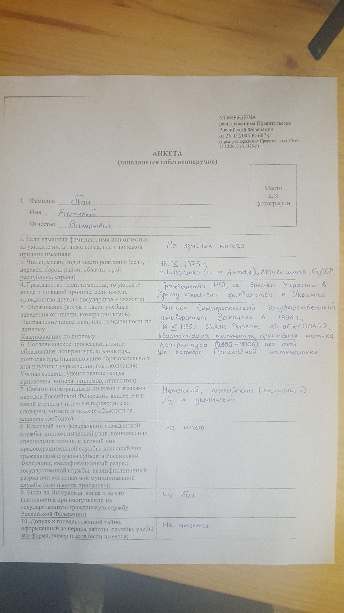
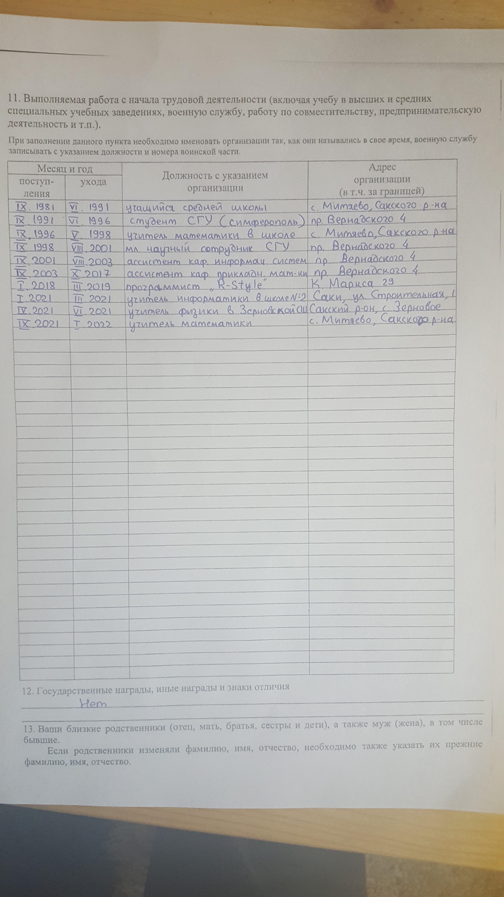
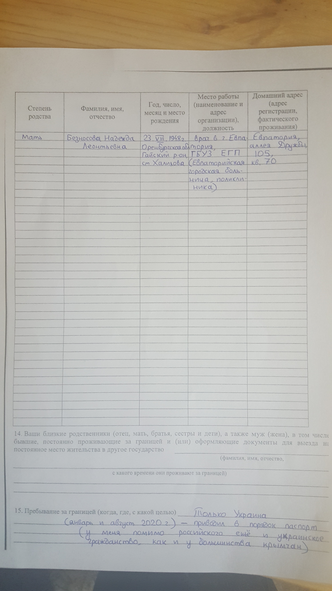
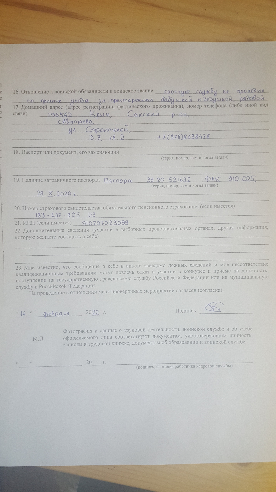

Hier wurde meine Tätigkeit beschrieben, der der sogennante Stichtag folgte.
Aber zwischen ihr und dem "Stichtag" bleiben Wochen der Arbeitslosigkeit.
Der Stichtag kam auf die Periode, wenn
ich mit einer der potenziellen neuer Arbeitsplätze mich beschäftigte.
Und jetzt zeige ich, wie ich am 14. Februar 2022 einen Fragebogen ausgefüllt habe, als Kandidat
an diese Arbeit. Ihre Seite ist tfomsrk.ru, und
ihres Büro befand sich an derselber Strasse in Simferopol, wo das berühmte Gebäude für
Polizei und ehemaliges KGB (Franko-Boulevard) sich erhebt.
Das Büro hatte etwas mit Statistik der russischer Gesundheitskasse zu tun. Sie suchten einen Mathematiker damals, und
brachten an den Mann eine
tüchtige Lohnung (40 Tausend Rubel).
Die erste Liste fragt über das Geburtsort, der Ausbildung, Verurteilungen, Sprachkentnisse usw.:

Im diesem Fragebogen wurden nicht nur
die letzte Arbeitsplätze in Acht genommen, sondern auch die sämstliche:

Sobald diese Arbeit sich ein wenig (oder ganz?) unter dem Flügel des FSB
befindet, stellt der Fragebogen an einen Kandidat solche Fragen,
als werde er mindestens als Spion betrachtet.
Die nächste Liste fragt über den Verwandten (ich erzähle ihnen über die Mutter).
Auch gibt es eine Frage über ausländische Reisen:

Zum Schluss, fragen sie mich, ob ich in der Armee diente, welche ist meine Telefonnummer
und welche russische Dokumente habe ich:

In meiner E-mail a-r-s-e-n@inbox.ru kann man meinen Briefwechsel mit dieser Organisation ansehen,
der meinem 'Interview' bei dem Büro folgte.
Bei dem Interview habe ich eine Aufgabe bekommt, die mit russischen "Bundesgesetzen"
etwas zu tun hatte (ich sollte ihre Struktur zu begreifen).
Aus Leibenskräften versuchte ich auf diese Stelle für mich zu kriegen, der Beginn des Kriegs
nur verstärkte meine Pläne. 25. Februar 2022 erklärte ich ihnen, dass ich fertig bin.
Am 28. Februar 2022 sollte ich zum zweiten "Verhör" zu Befehl kommen, aber
ausgerechnet zu diesem Fahrt nahm ich mein Auto, an dem ich eine kurze Zeit zuvor den Motor gewechselt habe
(das war sein "Testflug", eigentlich). Und 10 km. nach wurde ein Draht verbrannt. Ich kam mit dem Draht zurecht,
aber der Fahrt scheiterte (ich kehrte zurück, um das Auto in weitere Ordnung zu bringen).
Wenn ich mit dem Draht kämpfte, zum ersten Mal beobachtete ich
russische LKW mit dem Buchstabe Z, die auf dem Weg nach den Krieg waren
(bisher war mir dieses Gebilde nur bei Sendungen in Youtube bekannt).
Ein LKW fuhr in die oppositionelle Richtung, und er sah nicht so brav aus
(kann sein, fuhr er Leichen oder Verwundeten).